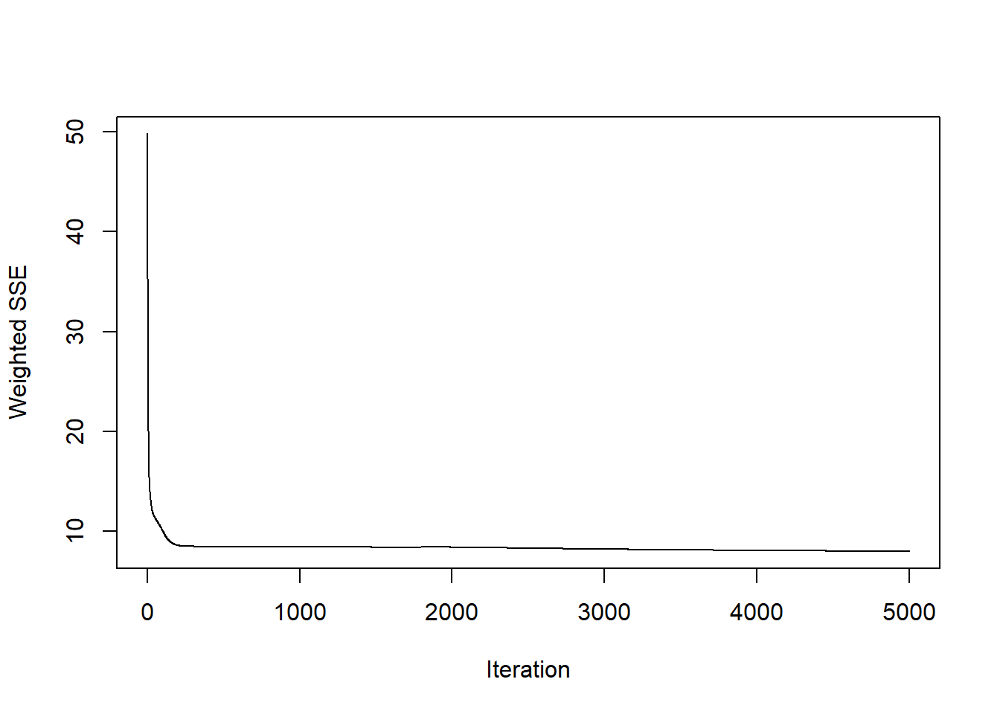
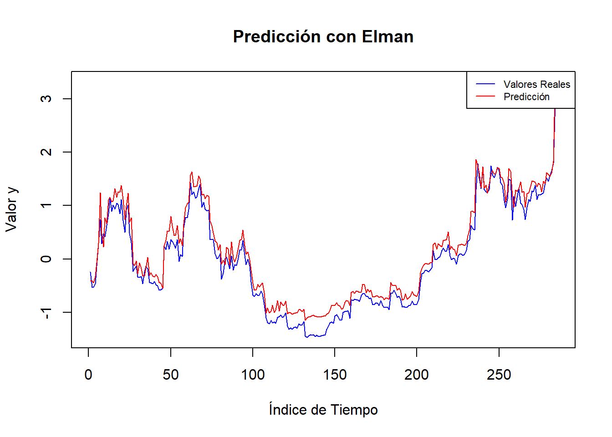
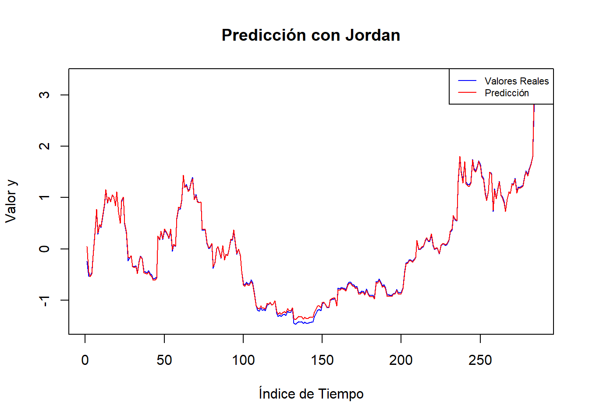

Capítulo 7 Redes Neuronales Recurrentes
Consisten en un tipo de arquitectura de redes neuronales diseñadas para procesar datos secuenciales o temporales. Esto las hace particularmente útiles para tareas donde el orden o la temporalidad de los datos importa, como el procesamiento de texto, series temporales, y señales como audio o video. Utilizan el contexto histórico de una serie de tiempo para predecir valores futuros, como en la predicción de tendencias económicas o financieras.
7.1 Elman Neural Networks
Son una de las primeras arquitecturas de Redes Neuronales Recurrentes (RNN) y se destacaron por su enfoque innovador al incorporar una memoria explícita a través de las neuronas de contexto. Esta capacidad de memoria les permitió manejar datos secuenciales y modelar relaciones temporales en tareas como predicción de series temporales, reconocimiento de patrones y procesamiento del lenguaje natural.
Inicialmente se estandarizan los datos
Los datos de la serie se escalaron para asegurar que todas las variables tengan una media de cero y una desviación estándar de uno, lo que facilita el entrenamiento de la red neuronal.
Posteriormente se selecciona la cantidad de rezagos:
# Se convierte la serie a la clase zoo
y <- as.zoo(y)
# Operador Quantmod Lag:
x1<-Lag(y,k=1)
x2<-Lag(y,k=2)
x3<-Lag(y,k=3)
x4<-Lag(y,k=4)
x5<-Lag(y,k=5)
x6<-Lag(y,k=6)
x7<-Lag(y,k=7)
x8<-Lag(y,k=8)
x9<-Lag(y,k=9)
x10<-Lag(y,k=10)Se crearon 10 variables de rezago (lags) de la serie temporal, representando los valores anteriores en distintos momentos. Estos rezagos sirven como atributos de entrada para la red, permitiendo que el modelo capture dependencias temporales.
# se agrupan las variables
rnn_btc_elm <- cbind(x1,x2,x3,x4,x5,x6,x7,x8,x9,x10)
rnn_btc_elm <- cbind(y,rnn_btc_elm)
# se guarda el vector para la otra red neuronal
rnn_btc_jor <- cbind(y,rnn_btc_elm)
# se eliminan los NA
rnn_btc_elm <- rnn_btc_elm[-(1:10),]
# Visualizar rezagos
head(round(rnn_btc_elm,2),10)## y Lag.1 Lag.2 Lag.3 Lag.4 Lag.5 Lag.6 Lag.7 Lag.8 Lag.9 Lag.10
## 11 -0.34 -0.18 -0.07 -0.04 -0.12 -0.27 -0.44 -0.55 -0.51 -0.54 -0.70
## 12 -0.44 -0.34 -0.18 -0.07 -0.04 -0.12 -0.27 -0.44 -0.55 -0.51 -0.54
## 13 -0.24 -0.44 -0.34 -0.18 -0.07 -0.04 -0.12 -0.27 -0.44 -0.55 -0.51
## 14 -0.13 -0.24 -0.44 -0.34 -0.18 -0.07 -0.04 -0.12 -0.27 -0.44 -0.55
## 15 -0.27 -0.13 -0.24 -0.44 -0.34 -0.18 -0.07 -0.04 -0.12 -0.27 -0.44
## 16 -0.31 -0.27 -0.13 -0.24 -0.44 -0.34 -0.18 -0.07 -0.04 -0.12 -0.27
## 17 -0.33 -0.31 -0.27 -0.13 -0.24 -0.44 -0.34 -0.18 -0.07 -0.04 -0.12
## 18 -0.28 -0.33 -0.31 -0.27 -0.13 -0.24 -0.44 -0.34 -0.18 -0.07 -0.04
## 19 -0.31 -0.28 -0.33 -0.31 -0.27 -0.13 -0.24 -0.44 -0.34 -0.18 -0.07
## 20 -0.34 -0.31 -0.28 -0.33 -0.31 -0.27 -0.13 -0.24 -0.44 -0.34 -0.18Se crea el set de entrenamiento:
# Configurar la semilla para reproducibilidad
set.seed(123)
# Número total de filas
num_filas_elm <- nrow(rnn_btc_elm)
# Proporción de entrenamiento (80%)
prop_train_elm <- 0.8
num_train_elm <- floor(num_filas_elm * prop_train_elm)
# Crear índices para las filas de entrenamiento
train_indices_elm <- sample(1:num_filas_elm, size = num_train_elm, replace = FALSE)Se dividió el conjunto de datos en entrenamiento (80%) de manera aleatoria para evaluar el rendimiento del modelo en datos no vistos.
Se crea la Red Neuronal Elman y se entrena:
# se definen valores de entrada y salida de la red
inputs <- rnn_btc_elm[,2:10]
outputs <- rnn_btc_elm[,1]
fit <- elman(
inputs[train_indices_elm],
outputs[train_indices_elm],
size=c(4,2),
learnFuncParams=c(0.1),
maxit =5000
)Las 10 variables de rezago se utilizaron como entradas para la red neuronal. Por otra parte, la serie temporal original se utilizó como la variable objetivo que el modelo intenta predecir.
Se implementó una red con dos capas ocultas; la primera con 3 neuronas y la segunda con 2 neuronas. Esta configuración permite al modelo capturar patrones complejos en los datos. La tasa de aprendizaje se estableció en 0.1, determinando la velocidad con la que el modelo ajusta sus pesos durante el entrenamiento. El número de iteraciones se fijó en 5,000, indicando cuántas veces el algoritmo de entrenamiento procesa el conjunto de datos completo.

Al graficar el error iterativo, se observó una rápida convergencia hacia cero, sugiriendo que el modelo aprendió eficazmente la relación entre las variables de entrada y la salida.
Se realiza predicción con los términos restantes de la serie:
# Convertir la salida a vector
y<-as.vector(outputs[-train_indices_elm])
# Graficar los valores reales con título y etiquetas
plot(y, type = "l", col = "blue",
main = "Predicción con Elman",
xlab = "Índice de Tiempo",
ylab = "Valor y")
# Generar predicciones
pred <- predict(fit, inputs[-train_indices_elm])
# Añadir las predicciones al gráfico en rojo
lines(pred, col = "red")
# Agregar una leyenda para distinguir entre valores reales y predicciones
legend("topright", legend = c("Valores Reales", "Predicción"),
col = c("blue", "red"), lty = 1, cex = 0.7)
# Métricas de las series
cat("Coeficiente de correlación", cor(outputs[-train_indices_elm], pred)^2, "\n")## Coeficiente de correlación 0.9853925## Error cuadrático medio 0.04617113Se realizaron predicciones sobre el conjunto de prueba para evaluar la capacidad del modelo en datos no vistos. Se observa que la predicción sobre la serie original es buena, en muchas ocasiones coincide con los datos reales.
Este proceso demuestra una aplicación meticulosa de las Redes Neuronales Elman en la modelación de series temporales, destacando la importancia del preprocesamiento de datos, la adecuada parametrización del modelo y la evaluación rigurosa para asegurar un rendimiento óptimo.
7.2 Jordan Neural Networks
Son otra variante de las Redes Neuronales Recurrentes (RNN). Estas redes son similares a las Redes de Elman, pero presentan una diferencia clave: en lugar de usar la salida de la capa oculta para las conexiones de contexto, las Redes de Jordan utilizan la salida de la red como memoria recurrente.
Para hacer lo más posible comparable a la red Jordan con la red Elman, se aplican los mismos pasos.
Se crea el set de entrenamiento:
# se eliminan los NA
rnn_btc_jor <- rnn_btc_jor[-(1:10),]
# Configurar la semilla para reproducibilidad
set.seed(123)
# Número total de filas
num_filas_jor <- nrow(rnn_btc_jor)
# Proporción de entrenamiento (80%)
prop_train_jor <- 0.8
num_train_jor <- floor(num_filas_jor * prop_train_jor)
# Crear índices para las filas de entrenamiento
train_indices_jor <- sample(1:num_filas_jor, size = num_train_jor, replace = FALSE)Se crea la Red Neuronal Jordan y se entrena:
# se definen valores de entrada y salida de la red
inputs2 <- rnn_btc_jor[,2:10]
outputs2 <- rnn_btc_jor[,1]
fit2 <- jordan(
inputs2[train_indices_jor],
outputs2[train_indices_jor],
size=4,
learnFuncParams=c(0.1),
maxit =5000
)Se han solicitado cuatro capas ocultas y un factor de tasa de aprendizaje de 0.1.
Se observa que el error también converge muy rápidamente hacia cero.
Se realiza predicción con los términos restantes de la serie:
# Convertir la salida a vector
y<-as.vector(outputs2[-train_indices_jor])
# Graficar los valores reales con título y etiquetas
plot(y, type = "l", col = "blue",
main = "Predicción con Jordan",
xlab = "Índice de Tiempo",
ylab = "Valor y")
# Generar predicciones
pred2 <- predict(fit2, inputs2[-train_indices_jor])
# Añadir las predicciones al gráfico en rojo
lines(pred2, col = "red")
# Agregar una leyenda para distinguir entre valores reales y predicciones
legend("topright", legend = c("Valores Reales", "Predicción"),
col = c("blue", "red"), lty = 1, cex = 0.7)
# Métricas de las series
cat("Coeficiente de correlación", cor(outputs2[-train_indices_jor], pred2)^2, "\n")## Coeficiente de correlación 0.9984554## Error cuadrático medio 0.001466731Se observa que la predicción sobre la serie original en este caso también es buena, incluso un poco mejor que la predicción con Elman, lo que se soporta con un mayor coeficiente de correlación y un menor error cuadrático medio, sin embargo, esto puede deberse a diferencias en los hiperparámetros utilizados; los hiperparámetros como el tamaño de las capas ocultas, la tasa de aprendizaje y el número de iteracciones han sido más adecuados para el modelo de Jordan en este caso específico. Adicional, las redes Jordan, al utilizar la salida como contexto recurrente, pueden captar patrones diferentes en los datos, lo que podría darles una ventaja en ciertas configuraciones.